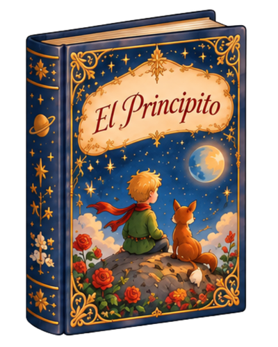
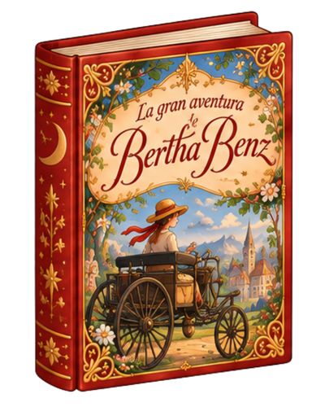
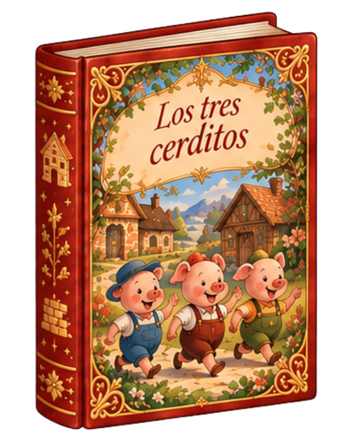

✦ Un rincón para imaginar ✦
Biblioteca de
Cuentos
Elige un libro y descubre una nueva aventura

Próximamente
✦ Nuestro primer cuento ✦

¡Descubre su aventura!

Próximamente
Toca un libro para descubrir su historia
✧
×
Entendido
♫ Activar música
Volumen
Vals de otoño
Vals del bosque